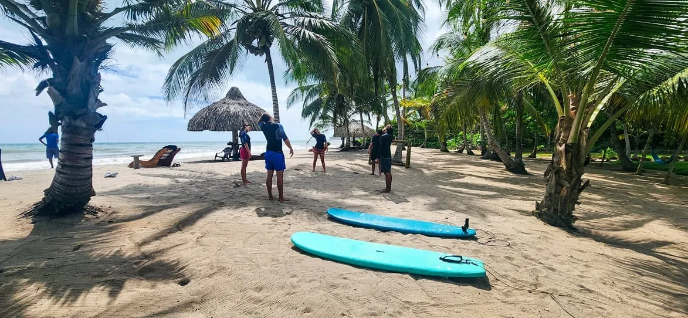

Palomino · Colombia
De golven van Palomino zijn consistent en krachtig — perfect voor beginnerssurfers en enthousiaste bodyboarders. Het strand heeft brekende golven die dichtbij het strand grote schuimende branders vormen, ideaal om op te surfen zonder een lange paddle. De surfcultuur in Palomino is ontspannen en vriendelijk.
Verschillende strandlodges en lokale operators verhuren bodyboards, surfplanken en bieden lessen aan. De beste golven zijn 's ochtends vroeg en in de late namiddag. Het surfgedeelte van het strand is duidelijk afgebakend — zwem niet in de surfzone als je geen ervaring hebt.

Surfing conditions in Palomino change all year long, but the smoothest and largest 2m to 3m waves occur during the windy season from December to February. October and May are the calmest. Palomino has several surf schools with instructors certified by the Federación Colombiana de Surf (Fecolsurf). Among them are Palomino Surf & Bodyboard School, Tide Escuela de Surf and Surf by José.
Guajira, with an alluring beach and plenty of budget accommodation.
• Beginners: start met bodyboarden — makkelijker te leren en even leuk
• Respecteer de surfers — geef ze ruimte in de golven
• Zonnecrème opnieuw aanbrengen na elke sessie — de Caribische zon is intens
• De strandlodges hebben de beste surfplanken — goedkoper dan geïmporteerd materiaal
• Combineer surfen in de ochtend met tubing op de rivier in de namiddag voor een perfecte dag